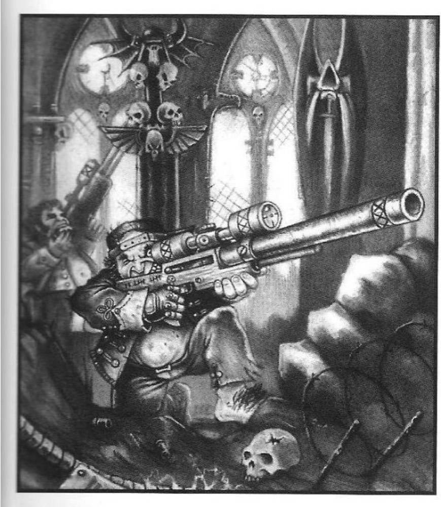

Abhuman
| Abhumans Homo sapiens variatus | |
|---|---|
 Emblem of the Militarum Auxilla, in which most abhuman soldiers serve Artwork © Games Workshop | |
| Definition | Stable, true-breeding human strain diverged from the baseline |
| Origin | Colonies of the Dark Age of Technology isolated in the Age of Strife (c. M25–M30) |
| Recognised strains | 73 recorded; 46 declared extinct (M41) |
| Citizen strains | Ogryns; Ratlings |
| Former strains | Beastmen (outlawed after M31); Squats (now the Leagues of Votann) |
| Military service | Militarum Auxilla of the Astra Militarum |
| Registered by | Administratum |
An abhuman is a member of one of the stable variant strains of humanity recognised by the Imperium of Mankind. Abhumans are descended from human colonists of the Dark Age of Technology whose descendants adapted over thousands of years to the extreme conditions of the worlds they settled, or, in some cases, from humans deliberately altered for a purpose. Unlike mutants, abhumans share a common and consistent physical form, breed true, and are no more prone to further mutation than other humans. For that reason the Administratum records them as strains of mankind rather than as deviants.[1][2]
By the 41st millennium the Adeptus Terra had recognised seventy-three abhuman strains, of which forty-six had been declared extinct and a further twelve were close to being so declared for lack of contact. The two best known are the Ogryns, huge and immensely strong, and the Ratlings, small and quick, both of which serve in large numbers in the Astra Militarum. The Squats of the galactic core were long counted among the abhumans before they were believed destroyed; they have since returned as the Leagues of Votann. The horned Beastmen served the Imperium during the Great Crusade but are now proscribed.[2][3]
Abhumans occupy an uneasy place in Imperial society. Those that hold citizenship are indoctrinated in the Imperial Cult, watched by Commissars and priests, and widely distrusted, especially by puritan members of the Inquisition and by the devout, who see little difference between abhuman and mutant.[4][5]
Origins and status
[edit]During the Dark Age of Technology (c. M15–M25) humanity colonised worlds of every kind, many of them hostile. When the Age of Strife (c. M25–M30) cut those colonies off from Terra, some populations adapted physically to their worlds over many generations: to high gravity, to extreme cold or heat, to darkness or to scarce resources. When the Great Crusade (c. 798.M30–005.M31) rediscovered them, the Imperium had to decide whether they were human.[6]
Under the secular Imperial Truth of the crusade, the answer was pragmatic. Stable strains that could serve were enrolled in the Imperial Army, even ones as divergent as the Beastmen. After the Horus Heresy (005–014.M31) and the rise of the Imperial Cult, attitudes hardened. Only the less divergent strains, chiefly Ogryns and Ratlings, retained full citizenship; others were outlawed or left to themselves. The Administratum's register of strains dates in its present form from this period, though it has been revised many times since.[2][7][a]
Strains
[edit]Ogryns
[edit]Ogryns (Homo sapiens gigantus) are abhumans of great size and strength, often standing twice the height of an ordinary man and weighing several times as much. They are believed to descend from colonists of high-gravity, harsh worlds. Ogryns are slow of thought, and most cannot read or count beyond a few numbers, but they are tough, loyal and fearless, with a simple and fervent devotion to the Emperor. In the Astra Militarum they serve as shock troops and bodyguards, armed with heavy close-range guns built to survive their handling. Selected Ogryns receive a cranial implant, the BONE'ead procedure, which raises their intelligence enough for them to act as sergeants. Others serve as Bullgryns, heavily armoured with shields and maces.[4][8]
Ratlings
[edit]
Ratlings (Homo sapiens minimus) are abhumans of small stature, rarely reaching more than half the height of an ordinary man. Imperial records describe them as loud, hungry, light-fingered and fond of comfort, and as gifted marksmen with keen eyesight and steady hands. In the Astra Militarum they serve chiefly as snipers and scouts, and are noted for their skill at acquiring supplies, by fair means or otherwise. Their best-known homeworlds have been lost or devastated, and many Ratlings are born in the regiments and camp-followings of the Militarum.[4][8]
Squats
[edit]The Squats (Homo sapiens rotundus) of older Imperial records were short, stocky and immensely tough abhumans from high-gravity mining worlds near the galactic core. Imperial histories record that their worlds broke away from the Imperium during the Age of Apostasy (early M36 to c. 310.M36) and later returned as autonomous allies, and that their homeworlds were overrun by Tyranids in the late 41st millennium, after which they were believed destroyed. In the Era Indomitus, a starfaring civilisation of the galactic core, the Leagues of Votann, whose people call themselves the Kin, made itself known to the Imperium. Its records trace the Kin to mining expeditions sent out from ancient Terra, and Imperial scholars now regard the old Squat records as fragmentary accounts of the same people. Whether the Kin are abhumans or xenos remains disputed in Imperial law.[2][3][b]
Beastmen
[edit]
Beastmen (Homo sapiens variatus) are horned, hoofed and heavily furred abhumans, resembling humanoid goats or rams. During the Great Crusade they were recruited into the Imperial Army, where they fought under packmasters of their own kind. After the Horus Heresy, as Beastmen became associated with the forces of Chaos, they lost their status. In the 41st millennium most Imperial authorities treat them as mutants or as Chaos creatures, and the Beastmen known to the Imperium serve the Chaos Gods; whether any loyal strain survives is not recorded.[6][5]
Other strains
[edit]The Administratum register lists many lesser strains, among them the Nightsiders of sunless worlds, who are pale and have large, light-sensitive eyes; the Felinids; the Troths; the Longshanks; and the Scalies. Some scholars also count the giant furnace-workers of House Goliath on Necromunda as a strain. The Navigators of the Navis Nobilite are sometimes described as abhumans, though their mutation is protected by ancient law and they are not listed in the register.[2]
Military service
[edit]Abhumans who are Imperial citizens serve in the Militarum Auxilla, the auxiliary branch of the Astra Militarum for specialist and abhuman troops. Ogryn and Ratling units are attached to human regiments as required. Abhuman soldiers are indoctrinated in the Imperial Creed, often taught to regard themselves as lesser, and watched closely by Commissars and regimental priests. Many Imperial commanders nonetheless value them highly, and the loyalty of Ogryns in particular is proverbial.[4][8]
Timeline
[edit]| Date | Event |
|---|---|
| c. M15–M25 | Colonisation of extreme worlds in the Dark Age of Technology |
| c. M25–M30 | Isolated colonies adapt into stable strains |
| c. 798.M30–005.M31 | Abhumans, Beastmen among them, serve in the Imperial Army |
| M32 | Administratum register of strains; Beastmen proscribed (date estimated) |
| Early M36–c. 310.M36 | Squat worlds secede during the Age of Apostasy |
| Late M41 | Squat homeworlds reported overrun by Tyranids |
| M42 | Leagues of Votann make contact with the Imperium |
See also
[edit]Notes
[edit]- ^ The register's earliest surviving edition is of the 32nd millennium; the date of its compilation is estimated from the sequence of events.
- ^ Older Administratum records also describe a Squat role in Imperial armies as engineers and artillerists. The Logos Historica Verita considers these records unreliable.
References
[edit]- ^ Warhammer 40,000: Rulebook (8th Edition), pg. 71, 279. Games Workshop.
- ^ a b c d e Warhammer 40,000: Rulebook (6th Edition), pp. 404, 405. Games Workshop.
- ^ a b Codex: Imperial Guard (3rd Edition). Games Workshop.
- ^ a b c d White Dwarf 110, "Ogryns," by Ivan Weeds and Graeme Davis.
- ^ a b Inquisitor Rulebook (Specialty Game), pg. 19.
- ^ a b White Dwarf 303 (U.S.), "Chapter Approved, Abhumans".
- ^ [https://necromunda.com/gangs/ Necromunda.com - Gangs].
- ^ a b c White Dwarf 109, "The Imperial Guard".